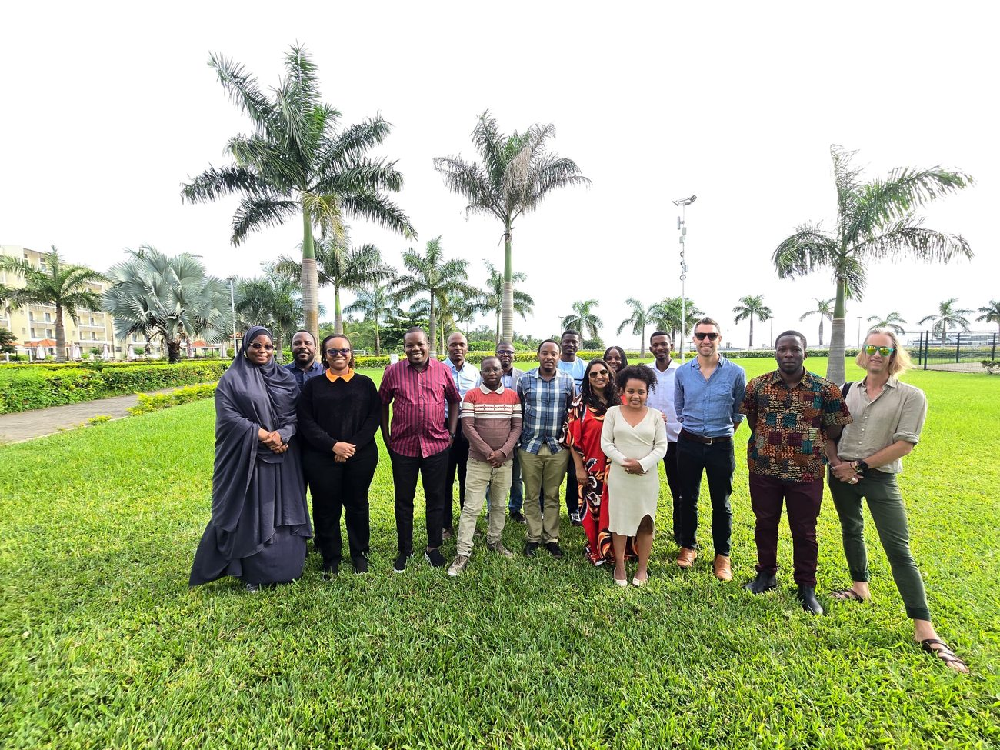
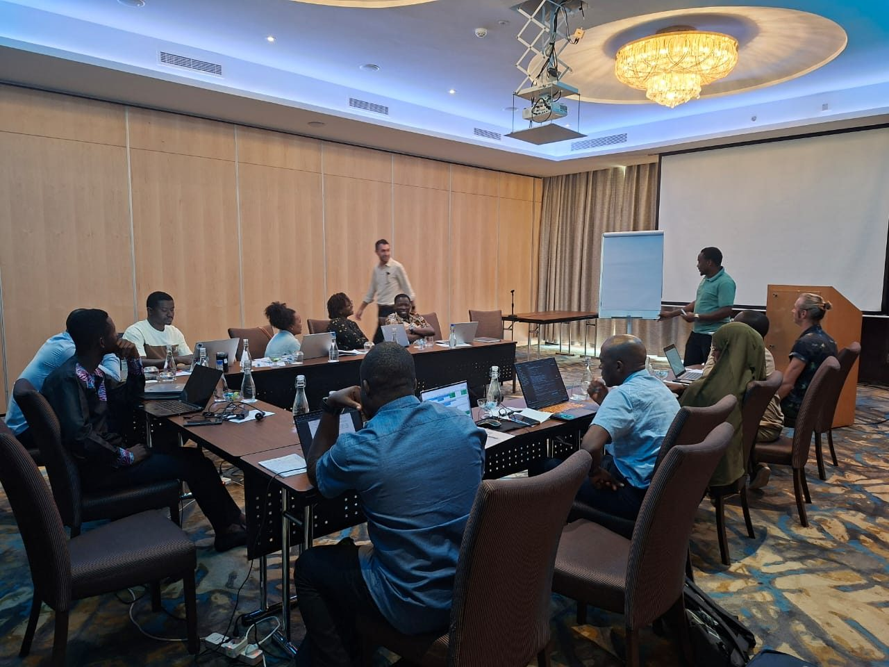

Avril 2026 · Zanzibar, Tanzanie
Un hackathon de modélisation réunit les pôles
Des groupes de travail réunissant plusieurs pôles ont passé la semaine à relever ensemble des défis techniques communs — de la construction d'un pipeline climatique ERA5-et-altitude pour Kinshasa à la modélisation du comportement de piqûre des vecteurs, du microclimat et de la capacité vectorielle — transformant les objectifs de collaboration et de renforcement des compétences du réseau en code opérationnel.